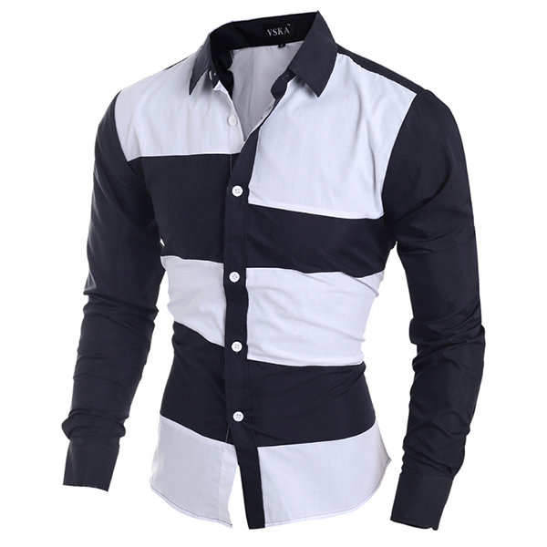
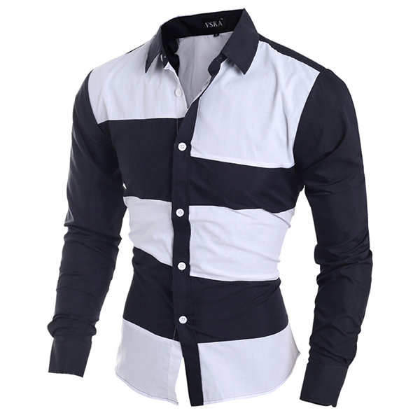

The World's Oldest preserved garment, discovered by Flinders Petrie, is a "highly sophisticated" linen shirt from a First Dynasty Egyptian tomb at Tarkan, c. 3000 BC: "the shoulders and sleeves have been finely pleated to give form-fitting trimness while allowing the wearer room to move. The small fringe formed during weaving along one edge of the cloth has been placed by the designer to decorate the neck opening and side seam."[1] The shirt was an item of clothing that only men could wear as underwear, until the twentieth century.[2] Although the women's chemise was a closely related garment to the men's, it is the men's garment that became the modern shirt.[3] In the Middle Ages, it was a plain, undyed garment worn next to the skin and under regular garments. In medieval artworks, the shirt is only visible (uncovered) on humble characters, such as shepherds, prisoners, and penitents.[4] In the seventeenth century, men's shirts were allowed to show, with much the same erotic import as visible underwear today.[5]
In the eighteenth century, instead of underpants, men "relied on the long tails of shirts ... to serve the function of drawers.[6] Eighteenth-century costume historian Joseph Strutt believed that men who did not wear shirts to bed were indecent.[7] Even as late as 1879, a visible shirt with nothing over it was considered improper.[2]
The shirt sometimes had frills at the neck or cuffs. In the sixteenth century, men's shirts often had embroidery, and sometimes frills or lace at the neck and cuffs and through the eighteenth century long neck frills, or jabots, were fashionable.[8][9] Coloured shirts began to appear in the early nineteenth century, as can be seen in the paintings of George Caleb Bingham. They were considered casual wear, for lower-class workers only, until the twentieth century. For a gentleman, "to wear a sky-blue shirt was unthinkable in 1860 but had become standard by 1920 and, in 1980, constituted the most commonplace event."[10] European and American women began wearing shirts in 1860, when the Garibaldi shirt, a red shirt as worn by the freedom fighters under Giuseppe Garibaldi, was popularized by Empress Eugénie of France.[11][12]
At the end of the nineteenth century, the Century Dictionary described an ordinary shirt as "of cotton, with linen bosom, wristbands and cuffs prepared for stiffening with starch, the collar and wristbands being usually separate and adjustable". The first documented appearance of the expression “To give the shirt off one’s back,” happened in 1771 as an idiom that indicates extreme desperation or generosity and is still in common usage. In 1827 Hannah Montague, a housewife in upstate New York, invents the detachable collar. Tired of constantly washing her husband’s entire shirt when only the collar needed it, she cut off his collars and devised a way of attaching them to the neckband after washing. It wasn't until the 1930s that collar stays became popular, although these early accessories resembled tie clips more than the small collar stiffeners available today. They connected the collar points to the necktie, keeping them in place.